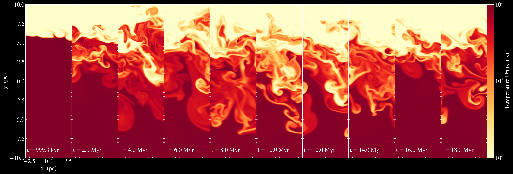
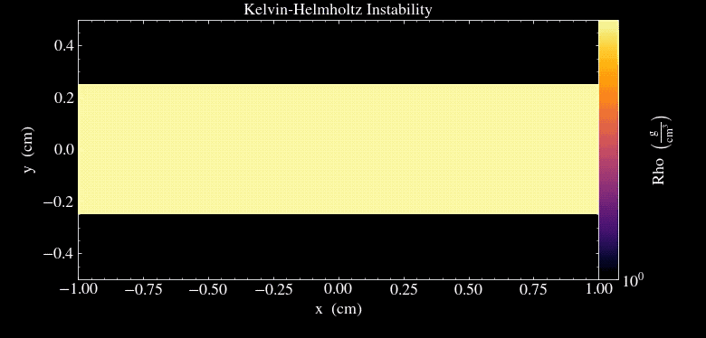

Mixing Layers ULAB Project
 In my second year of undergrad I had the opportunity to be a part of the Undergraduate Laboratory at Berkeley research program. In this program my group’s research was focused on computational astrophysics concerning mixing layers in the interstellar medium. This has taught me a lot about how to use C++ as a tool for simulating magnetohydrodynamical phenomenon. In this project we used the open source code Athena++ as a basis for creating our own problem generator to model the interstellar medium. I was mentored by a fellow undergraduate student by the name of Michael Jennings. In this project I discovered my love of computational astrophysics. In this project I learned how to run MHD simulations using the library Athena++. Tasks involved writing problem generators in C++, learning to use GitHub and UNIX, and some elementary lessons in astrophysical fluid dynamics. Click Here to look at our poster.